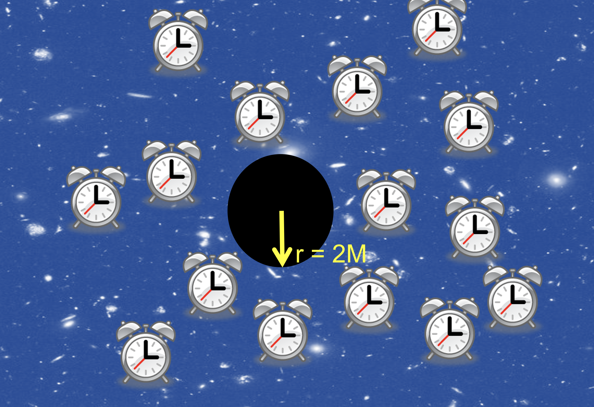

Forrige side🙂 🙁3 observatørerPADLET

Når vi har klart for oss hvordan koordinaten r måles, er vi klare til å bli bedre kjent med alle våre 3 observatører. Vi begynner med langt vekk-observatøren som får informasjon om tidspunkter t for eventer fra klokker som han har plassert rundt det sorte hullet og som er synkronisert med hans egen klokke. Det er alltid en slik klokke plassert ut der det skjer et event. Klokka sender beskjed til langt-vekkobservatøren om tidspunktet som eventet skjedde på denne klokka som altså er fikset til å gå med samme hastighet og er synkronisert med langt-vekkobservatørens klokke. Lokale klokker vil nemlig gå med en annen hastighet som vi snart skal se. Posisjoner for eventer har vi allerede sett hvordan langt-vekkobservatøren måler gjennom ß-koordinatet r.